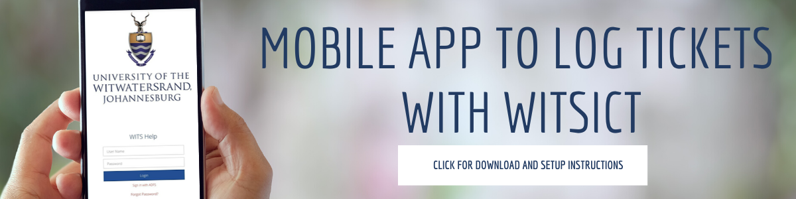

About
Staff
Alumni
Give
Library
News and Events
Wits100
Homepage
Study at Wits
Students
Faculties and Schools
Teaching and Learning
Research
News
Search
Search the site
Search
Menu
Search
Search the site
Search
In this section
Self Service (iWits)
Webmail
Wits Intranet
Password reset
Start main page content
Home
Staff
Staff Search
Search contact details for academic staff.
ORCiD - Take charge of your academic profile
Steps to follow to register for an ORCiD and link to your staff profile on the website.
Reporting a problem
Contact Protection Services
Get WitsICT Support
Report a health and safety issue
Request maintenance support
Engage the Gender Equity Office
Online Teaching
Access ulwazi
Canvas (Ulwazi) Resources
Ulwazi updates
Microsoft Educator Centre
Library
Virtual Training Company (VTC)
MOOC's
Remote Office
Off-campus connection (VPN)
Webmail
Microsoft Teams
Password reset
Human Resources
Self service (iWits)
Vacancies
Professional Development
Wits Retirement Fund
Policies
Upload Student Vacancies
Health & Wellbeing
Mpil’enhle - Itlhokomele
Campus Health
Free counselling services
Health and Safety
Wellness calendar
Kaelo Covid-19 Support
Wits Covid-19 Resources
Other Resources
Business applications
Almanac
Corporate Identity (Logos)
Download VPN Software
Library - Free E-Resources
Intranet
VTC free online training

Share
Tweet
Close